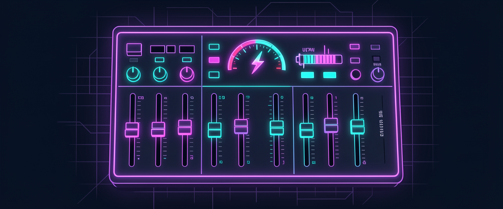
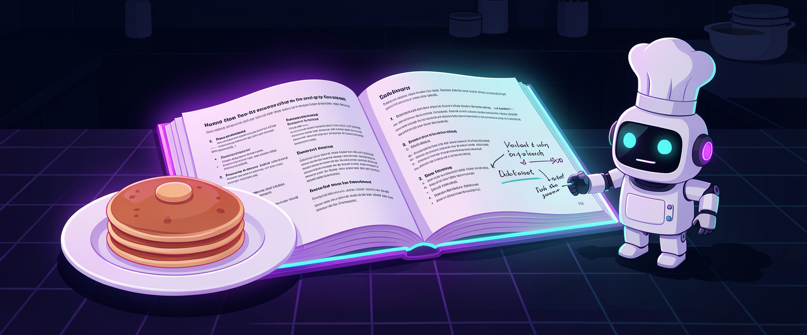
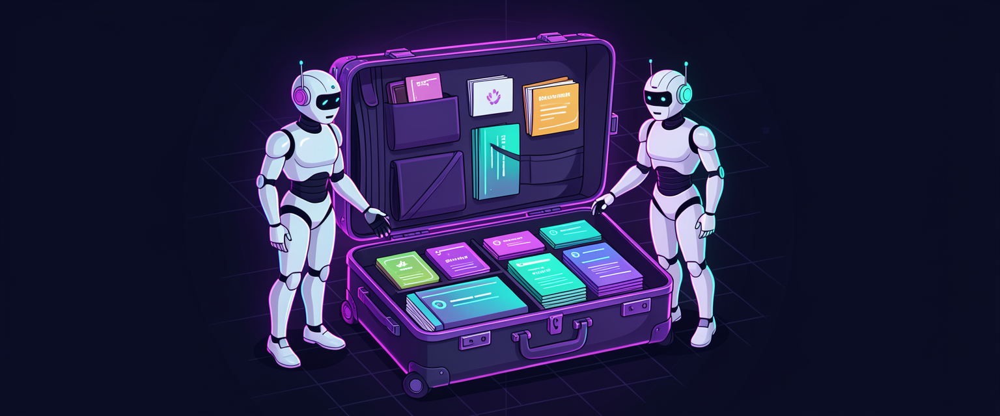
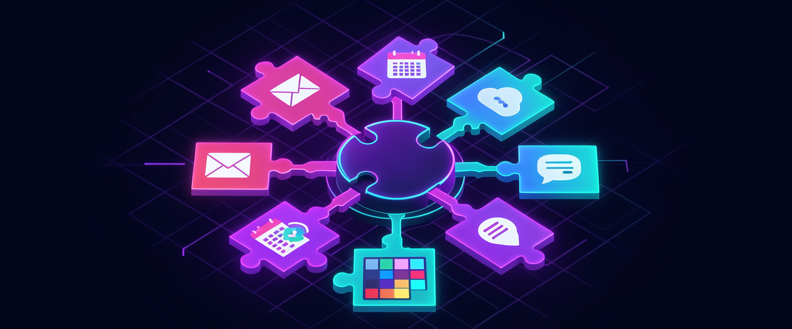

Mapa da trilha
🧠 Modelos: força e custo
Forte quando precisa
🎚️ Esforço e modo rápido
Quanto ele pensa
🚦 Permissões: quanto ele faz sozinho
Do pedir licença ao sem freio
🍳 Skills: receitas reutilizáveis
Faça uma vez, repita sempre
🧳 A pasta .agents e a vinda do Claude Code
Skills que viajam com você
🧩 Plugins: conecte seus aplicativos
Seus apps no mesmo lugar
Conteúdo detalhado

🧠 Modelos: força e custo
A família de modelos do Codex, o que são tokens de entrada e de saída e por que a assinatura rende mais que a API.
Modelos mais inteligentes resolvem problemas mais difíceis e consomem mais da sua cota.
Usar o modelo mais forte em tudo esgota a cota sem melhorar o resultado das tarefas simples.
Modelo, força, cota, consumo.
GPT-6-Astra (mais forte), GPT-6.1-Sol (dia a dia) e GPT-6-Luna (rápido e econômico), além de gerações anteriores.
Os nomes mudam com o tempo, mas a lógica de forte, médio e rápido fica.
GPT-6-Astra, GPT-6.1-Sol, GPT-6-Luna, catálogo.
Token é um pedaço de texto; entrada é o que entra no modelo, saída é o que ele produz, incluindo o raciocínio.
A saída custa mais: saber disso explica por que respostas longas pesam na cota.
Token, entrada, saída, raciocínio.
A API cobra por milhão de tokens e serve para programas; no Codex você usa a assinatura com cota semanal.
Para uso pessoal, a assinatura sai muito mais barata que pagar a mesma quantidade pela API.
Assinatura, API, cota semanal, créditos extras.
Escolher o modelo ao começar e trocar entre mensagens no seletor, ou abrir com codex -m no terminal.
Você usa o forte só no trecho difícil e volta ao econômico depois.
Seletor de modelo, troca, codex -m.
Um critério simples: e-mail e resumo no modelo rápido, trabalho do dia no intermediário, problema difícil no mais forte.
Escolher pela tarefa economiza cota sem perder qualidade.
Critério, tarefa simples, tarefa difícil.

🎚️ Esforço e modo rápido
Os níveis de esforço de low a ultra, o modo rápido e como montar a sua tabela de modelo e esforço por tarefa.
Dentro de cada modelo você escolhe quanto ele raciocina antes de agir.
É um segundo botão de qualidade e custo, independente do modelo.
Esforço, raciocínio, qualidade.
low, medium, high, xhigh, max e ultra; ultra é o máximo, com delegação automática de tarefas.
Saber o que cada degrau faz evita subir sem necessidade.
low, medium, high, xhigh, max, ultra.
Mais esforço significa mais raciocínio, ou seja, mais tokens de saída e mais cota gasta.
Explica por que o mesmo modelo aparece em comparativos com resultados e custos diferentes.
Custo do raciocínio, tokens de saída, comparativos.
O modo rápido responde duas vezes mais rápido e consome mais cota.
Vale quando o tempo importa mais que a cota, não como padrão.
Modo rápido, velocidade, consumo.
Juntar modelo e esforço: o modelo do dia a dia em medium resolve quase todo trabalho de escritório.
A combinação certa entrega qualidade sem desperdiçar cota.
Combinação, padrão, codex -c model_reasoning_effort.
Uma tabela com as suas tarefas frequentes e o modelo e esforço de cada uma.
Você para de decidir toda vez e acerta de primeira.
Tabela pessoal, tarefas frequentes, padrão.

🚦 Permissões: quanto ele faz sozinho
Os três modos de permissão, quando subir de um para o outro e como bloquear ações específicas na configuração.
O agente mexe em arquivos, roda comandos e usa a internet; a permissão define o que ele faz sem perguntar.
Quem age de verdade precisa de limites claros.
Permissão, ação real, sandbox.
Pedir aprovação, Aprovar por mim (só pergunta em ação arriscada) e Acesso total (não pergunta nada).
Cada modo serve a um momento; conhecer os três evita ficar preso no errado.
Pedir aprovação, Aprovar por mim, Acesso total.
Usar o modo que pergunta antes de mexer fora da pasta e antes de usar a internet.
É o melhor jeito de aprender o que o agente faz, passo a passo.
Modo seguro, aprendizado, aprovação manual.
Quando já confia, trocar para o modo que só pergunta quando a ação parece arriscada, como apagar ou chamar serviço externo.
Você ganha velocidade sem abrir mão do freio nas ações perigosas.
Aprovar por mim, --approve-for-me, ação arriscada.
O modo sem freio: não pergunta nada. Só faz sentido numa pasta que você pode perder sem dor.
Usado no lugar errado, um erro do agente vira prejuízo real.
Acesso total, danger-full-access, pasta descartável.
Pedir ao Codex que registre regras na configuração, como nunca apagar arquivos de clientes ou nunca enviar e-mail sem mostrar antes.
Bloqueios específicos protegem o que importa em qualquer modo.
Regra de bloqueio, configuração, proteção.

🍳 Skills: receitas reutilizáveis
Como transformar uma tarefa que deu certo numa receita que o Codex segue igual, melhora com feedback e encadeia com outras.
Skill é uma receita reutilizável: você faz bem uma vez e ensina o Codex a fazer igual sempre.
Tarefa repetida vira um pedido de uma linha.
Skill, receita, repetição, padrão.
No topo, nome e quando usar (é isso que o Codex lê para decidir); embaixo, as instruções passo a passo.
Saber a anatomia permite ler, corrigir e escrever skills.
SKILL.md, metadados, descrição, instruções.
Pedir ao Codex que transforme a tarefa que acabou de dar certo numa skill.
A melhor skill nasce de um resultado aprovado, não de uma ideia no vácuo.
Criar skill, tarefa aprovada, pasta da skill.
Pedir em linguagem natural ("faça a descrição deste vídeo") ou chamar direto por /nome-da-skill.
Os dois jeitos funcionam; a barra garante que é aquela skill.
Chamada natural, barra, nome da skill.
Depois do resultado, dizer o que gostou e o que não, e pedir que ele atualize a skill.
Cada uso deixa a receita melhor, como a anotação na margem do caderno.
Feedback, atualizar skill, melhoria contínua.
Uma skill puxando a outra: descrição do vídeo, depois post do LinkedIn, depois artigo com imagens.
Fluxos encadeados fazem em minutos o que levava uma tarde.
Encadeamento, fluxo, "que skills você usou?".

🧳 A pasta .agents e a vinda do Claude Code
Onde as skills moram, como separar as do projeto das globais e como trazer um projeto montado no Claude Code.
A pasta .agents guarda as skills, uma pasta por skill com o seu SKILL.md dentro.
Saber onde ficam permite revisar, copiar e organizar suas receitas.
.agents, skills, pasta oculta.
Skill no .agents do projeto vale só ali; no ~/.agents da sua pasta de usuário vale em todos os projetos.
É a mesma lógica do .codex: decide onde cada receita deve valer.
Skill de projeto, skill global, escopo.
A skill pode apontar para outros arquivos: guia de voz, modelo de documento, planilha.
Mantém o SKILL.md curto e reaproveita o material que você já tem.
Referência a arquivo, guia de estilo, modelo.
Lá existem CLAUDE.md e .claude; aqui AGENTS.md, .agents e .codex. O mais simples é pedir ao Codex para adaptar o projeto.
Você não perde o que já construiu ao mudar de ferramenta.
Migração, CLAUDE.md, AGENTS.md, adaptação.
Regras e skills em arquivos locais de texto, que qualquer agente consegue ler.
Seu trabalho fica independente de ferramenta e sobrevive às trocas.
Portabilidade, arquivos locais, independência.
Nomes que dizem o que a skill faz, uma pasta por skill e revisão das que você não usa mais.
Biblioteca bagunçada faz o Codex escolher a skill errada.
Biblioteca, nomenclatura, limpeza.

🧩 Plugins: conecte seus aplicativos
Como conectar e-mail, drive e outros aplicativos ao Codex, o que fazer quando não há plugin e como cuidar da segurança.
Plugin é uma conexão pronta com um aplicativo, como e-mail, drive, agenda ou gerenciador de tarefas.
Com o plugin, o Codex usa o aplicativo direto, sem você copiar e colar.
Plugin, conexão, aplicativo.
Abrir a área de Plugins, escolher o aplicativo e entrar com a sua conta uma vez.
Uma conexão bem feita já muda o tipo de pedido que você consegue fazer.
Área de Plugins, login, autorização.
Procurar por categoria (criatividade, negócios, dados, comunicação) no app, ou listar com codex plugin list.
O catálogo cresce; saber procurar evita achar que não existe.
Catálogo, categorias, codex plugin list.
Fazer um pedido que usa o aplicativo conectado, como buscar um e-mail ou salvar um arquivo no drive.
É aqui que a conexão vira trabalho poupado.
Uso do plugin, pedido, resultado.
Sem plugin, conectar por chave de API num arquivo .env, por MCP (codex mcp add) ou pelo navegador.
Quase todo aplicativo tem algum caminho; o plugin é só o mais fácil.
Chave de API, .env, MCP, navegador.
Conceder só o que precisa, revisar acessos, nunca pôr chave no AGENTS.md e remover o que não usa.
Cada conexão é uma porta para a sua conta; porta esquecida é risco.
Permissão mínima, revisão, codex plugin remove.